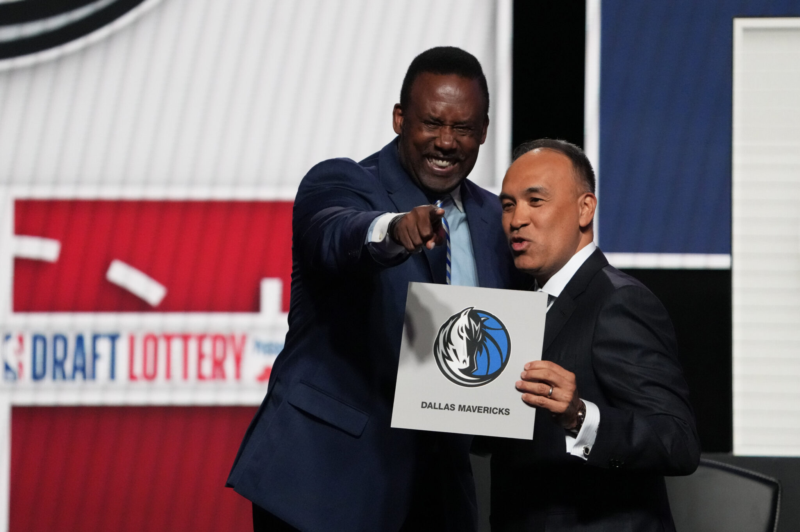
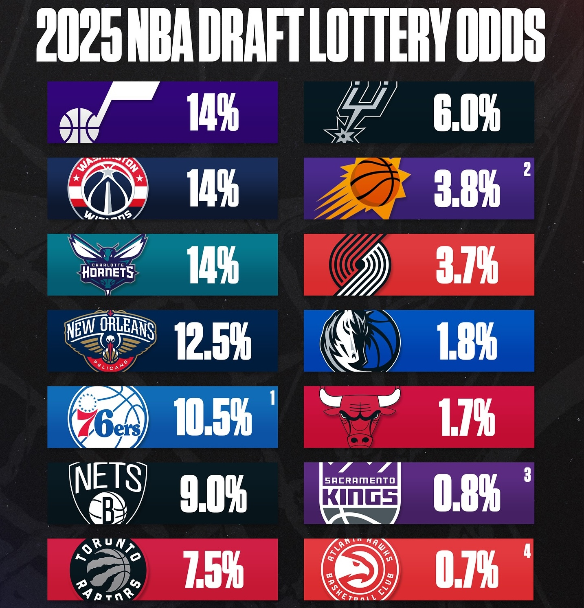
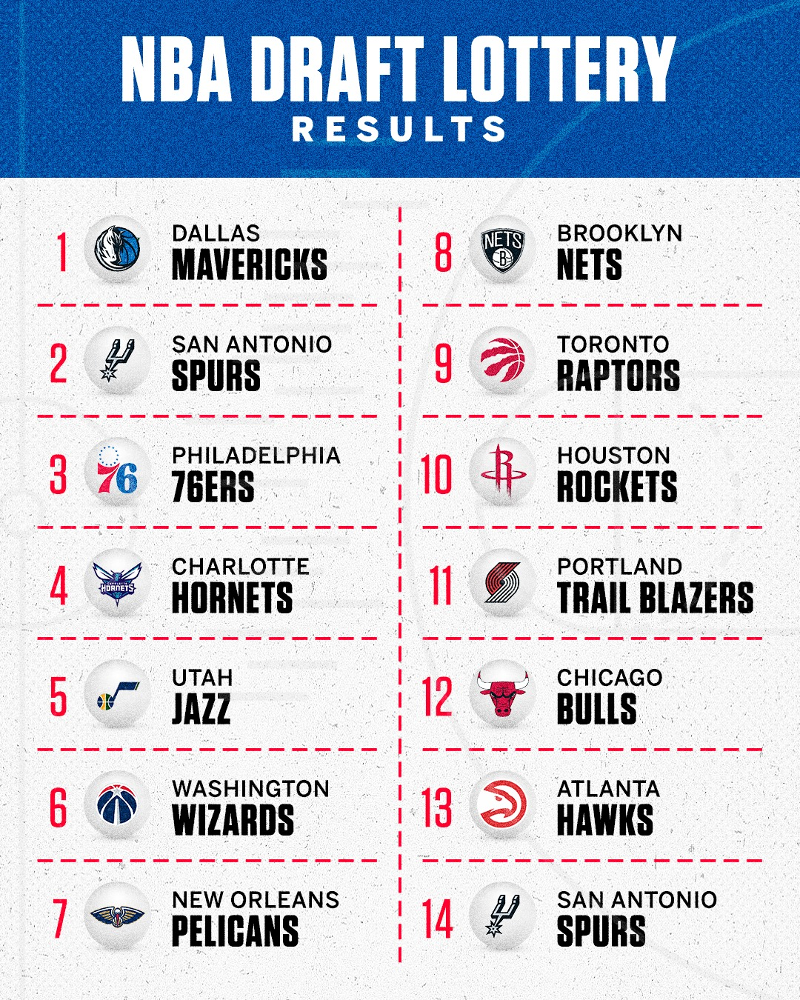

<!DOCTYPE html>
<html lang="en" dir="auto">

<head><script src="/livereload.js?mindelay=10&amp;v=2&amp;port=1313&amp;path=livereload" data-no-instant defer></script><meta charset="utf-8">
<meta http-equiv="X-UA-Compatible" content="IE=edge">
<meta name="viewport" content="width=device-width, initial-scale=1, shrink-to-fit=no">
<meta name="robots" content="noindex, nofollow">
<title>Is the NBA lottery rigged? | Frank Li</title>
<meta name="keywords" content="">
<meta name="description" content="
     
            2025 Draft Lottery
        


Following the 2025 NBA draft lottery that saw the Dallas Mavericks win the number one overall pick, the sports world was abuzz with claims that the lottery was rigged. Not only were the odds tiny (1.8%), but months before the Mavs had also puzzlingly traded superstar Luka Doncic to the Lakers, the NBA&rsquo;s most marketable team. This isn&rsquo;t without precedent either - conspiracies arose in the 1985 Draft Lottery, when the New York Knicks were awarded the 1st pick following an enevelope debacle.">
<meta name="author" content="">
<link rel="canonical" href="http://localhost:1313/posts/lottery/">
<link crossorigin="anonymous" href="/assets/css/stylesheet.08f7d74f0ada0f975d29ae436285b61ed7a719d05f350cb888d00341642995a2.css" integrity="sha256-CPfXTwraD5ddKa5DYoW2HtenGdBfNQy4iNADQWQplaI=" rel="preload stylesheet" as="style">
<link rel="icon" href="http://localhost:1313/favicon.ico">
<link rel="icon" type="image/png" sizes="16x16" href="http://localhost:1313/favicon-16x16.png">
<link rel="icon" type="image/png" sizes="32x32" href="http://localhost:1313/favicon-32x32.png">
<link rel="apple-touch-icon" href="http://localhost:1313/apple-touch-icon.png">
<link rel="mask-icon" href="http://localhost:1313/safari-pinned-tab.svg">
<meta name="theme-color" content="#2e2e33">
<meta name="msapplication-TileColor" content="#2e2e33">
<link rel="alternate" hreflang="en" href="http://localhost:1313/posts/lottery/">
<noscript>
    <style>
        #theme-toggle,
        .top-link {
            display: none;
        }

    </style>
    <style>
        @media (prefers-color-scheme: dark) {
            :root {
                --theme: rgb(29, 30, 32);
                --entry: rgb(46, 46, 51);
                --primary: rgb(218, 218, 219);
                --secondary: rgb(155, 156, 157);
                --tertiary: rgb(65, 66, 68);
                --content: rgb(196, 196, 197);
                --code-block-bg: rgb(46, 46, 51);
                --code-bg: rgb(55, 56, 62);
                --border: rgb(51, 51, 51);
            }

            .list {
                background: var(--theme);
            }

            .list:not(.dark)::-webkit-scrollbar-track {
                background: 0 0;
            }

            .list:not(.dark)::-webkit-scrollbar-thumb {
                border-color: var(--theme);
            }
        }

    </style>
</noscript><!DOCTYPE html PUBLIC "-//W3C//DTD HTML 4.01//EN" "http://www.w3.org/TR/html4/strict.dtd">
<html>
<head>
  <meta http-equiv="Content-Type" content="text/html; charset=utf-8">
  <meta http-equiv="Content-Style-Type" content="text/css">
  <title></title>
  <meta name="Generator" content="Cocoa HTML Writer">
  <meta name="CocoaVersion" content="2487.7">
  <style type="text/css">
    p.p1 {margin: 0.0px 0.0px 0.0px 0.0px; font: 12.0px Helvetica; -webkit-text-stroke: #000000}
    span.s1 {font-kerning: none}
  </style>
</head>
<body>
<p class="p1"><span class="s1"></span></p>
<p class="p1"><span class="s1"><span class="Apple-converted-space">  </span><link rel="stylesheet" href="https://cdn.jsdelivr.net/npm/katex@0.16.10/dist/katex.min.css">
<script defer src="https://cdn.jsdelivr.net/npm/katex@0.16.10/dist/katex.min.js"></script>
<script defer src="https://cdn.jsdelivr.net/npm/katex@0.16.10/dist/contrib/auto-render.min.js"
        onload="renderMathInElement(document.body,{
          delimiters:[
            {left:'$$', right:'$$', display:true},
            {left:'$',  right:'$',  display:false},
            {left:'\\[', right:'\\]', display:true},
            {left:'\\(', right:'\\)', display:false}
          ],
          throwOnError:false
        });"></script>
</span></p>
<p class="p1"><span class="s1"></span></p>
</body>
</html>

</head>

<body class="" id="top">
<script>
    if (localStorage.getItem("pref-theme") === "dark") {
        document.body.classList.add('dark');
    } else if (localStorage.getItem("pref-theme") === "light") {
        document.body.classList.remove('dark')
    } else if (window.matchMedia('(prefers-color-scheme: dark)').matches) {
        document.body.classList.add('dark');
    }

</script>

<header class="header">
    <nav class="nav">
        <div class="logo">
            <a href="http://localhost:1313/" accesskey="h" title="Frank Li (Alt + H)">Frank Li</a>
            <div class="logo-switches">
                <button id="theme-toggle" accesskey="t" title="(Alt + T)" aria-label="Toggle theme">
                    <svg id="moon" xmlns="http://www.w3.org/2000/svg" width="24" height="18" viewBox="0 0 24 24"
                        fill="none" stroke="currentColor" stroke-width="2" stroke-linecap="round"
                        stroke-linejoin="round">
                        <path d="M21 12.79A9 9 0 1 1 11.21 3 7 7 0 0 0 21 12.79z"></path>
                    </svg>
                    <svg id="sun" xmlns="http://www.w3.org/2000/svg" width="24" height="18" viewBox="0 0 24 24"
                        fill="none" stroke="currentColor" stroke-width="2" stroke-linecap="round"
                        stroke-linejoin="round">
                        <circle cx="12" cy="12" r="5"></circle>
                        <line x1="12" y1="1" x2="12" y2="3"></line>
                        <line x1="12" y1="21" x2="12" y2="23"></line>
                        <line x1="4.22" y1="4.22" x2="5.64" y2="5.64"></line>
                        <line x1="18.36" y1="18.36" x2="19.78" y2="19.78"></line>
                        <line x1="1" y1="12" x2="3" y2="12"></line>
                        <line x1="21" y1="12" x2="23" y2="12"></line>
                        <line x1="4.22" y1="19.78" x2="5.64" y2="18.36"></line>
                        <line x1="18.36" y1="5.64" x2="19.78" y2="4.22"></line>
                    </svg>
                </button>
            </div>
        </div>
        <ul id="menu">
        </ul>
    </nav>
</header>
<main class="main">

<article class="post-single">
  <header class="post-header">
    
    <h1 class="post-title entry-hint-parent">
      Is the NBA lottery rigged?
    </h1>
    <div class="post-meta"><span title='2025-05-16 00:00:00 +0000 UTC'>May 16, 2025</span>&nbsp;·&nbsp;2 min

</div>
  </header> 
  <div class="post-content"><figure>
     <figcaption>
            <p>2025 Draft Lottery</p>
        </figcaption>
</figure>

<p>Following the 2025 NBA draft lottery that saw the Dallas Mavericks win the number one overall pick, the sports world was abuzz with claims that the lottery was rigged. Not only were the odds tiny (1.8%), but months before the Mavs had also puzzlingly traded superstar Luka Doncic to the Lakers, the NBA&rsquo;s most marketable team. This isn&rsquo;t without precedent either - conspiracies arose in the 1985 Draft Lottery, when the New York Knicks were awarded the 1st pick following an <a href="https://en.wikipedia.org/wiki/1985_NBA_draft#Conspiracy_theories_about_the_first_pick">enevelope debacle</a>.</p>
<p>So is the lottery actually rigged? Is the NBA putting up a front of fairness/randomness, when all it really cares about is money? Let&rsquo;s use this fun example as a refresher for statistical tests, and see if we can draw any conclusions given our limited sample size.</p>
<h2 id="how-does-the-lottery-work">How does the lottery work?</h2>
<p>It&rsquo;s pretty simple:</p>
<p><strong>The setup:</strong>
The lottery consists of 1000 balls which are divided up among the 14 non-playoff teams; the worse your regular-season record was, the more balls you will get. Here were the lottery odds for the most recent NBA lottery:</p>
<figure>
     <figcaption>
            <p>2025 lottery odds</p>
        </figcaption>
</figure>

<p>The Utah Jazz had a 14.0% chance of getting the first pick &lt;==&gt; 140 balls.</p>
<p><strong>The drawing:</strong>
The top 4 picks are up for grabs in the lottery (prior to 2019, it was 3); after these 4 picks have been determined, the rest are assigned by regular-season record. Starting from the first pick, we sequentially draw 4 balls (without replacement, since a team can&rsquo;t win multiple lottery picks).</p>
<h2 id="how-unlikely-was-the-2025-lottery">How ~unlikely~ was the 2025 lottery?</h2>
<figure>
     <figcaption>
            <p>2025 Draft Lottery results</p>
        </figcaption>
</figure>

<p>As mentioned before, every year&rsquo;s lottery consists of 4 random picks; the order of the remanining 9 picks are also determined by these 4 picks, so we will disregard these.</p>
<p>If we let $P_{2025}$ represent the probability of observing {1. DAL, 2. SAS, 3. PHI, 4. CHA}:</p>
<p>$P_{2025} = \frac{18}{1000} \cdot \frac{60}{1000-18} \cdot \frac {105}{1000-18-60} \cdot \frac{1400}{1000-18-60-105}$,</p>
<p>which comes out to roughly <strong>0.002146%, or ~ 1 in 46,600</strong>.</p>
<p>But how <del>unlikely</del> is this? Any single lottery outcome will have a low percentage by nature. For reference, the most likely single outcome {1. UTA, 2. WAS, 3. CHA, 4. NOP} had probability <strong>0.0955%, or ~ 1 in 1,047</strong>.</p>
<p>So around 40x less likely than the most likely single outcome, which still doesn&rsquo;t tell us much.</p>
<p>What if we simulate this across many trials, and see how many of these trials would be less likely than our actual outcome ($P_{2025} = 0.002146%$)?</p>

  </div>

  <footer class="post-footer">
    <ul class="post-tags">
    </ul>
  </footer>
</article>
    </main>
    
<footer class="footer">
        <span>&copy; 2025 <a href="http://localhost:1313/">Frank Li</a></span> · 

    <span>
        Powered by
        <a href="https://gohugo.io/" rel="noopener noreferrer" target="_blank">Hugo</a> &
        <a href="https://github.com/adityatelange/hugo-PaperMod/" rel="noopener" target="_blank">PaperMod</a>
    </span>
</footer>
<a href="#top" aria-label="go to top" title="Go to Top (Alt + G)" class="top-link" id="top-link" accesskey="g">
    <svg xmlns="http://www.w3.org/2000/svg" viewBox="0 0 12 6" fill="currentColor">
        <path d="M12 6H0l6-6z" />
    </svg>
</a>

<script>
    let menu = document.getElementById('menu')
    if (menu) {
        menu.scrollLeft = localStorage.getItem("menu-scroll-position");
        menu.onscroll = function () {
            localStorage.setItem("menu-scroll-position", menu.scrollLeft);
        }
    }

    document.querySelectorAll('a[href^="#"]').forEach(anchor => {
        anchor.addEventListener("click", function (e) {
            e.preventDefault();
            var id = this.getAttribute("href").substr(1);
            if (!window.matchMedia('(prefers-reduced-motion: reduce)').matches) {
                document.querySelector(`[id='${decodeURIComponent(id)}']`).scrollIntoView({
                    behavior: "smooth"
                });
            } else {
                document.querySelector(`[id='${decodeURIComponent(id)}']`).scrollIntoView();
            }
            if (id === "top") {
                history.replaceState(null, null, " ");
            } else {
                history.pushState(null, null, `#${id}`);
            }
        });
    });

</script>
<script>
    var mybutton = document.getElementById("top-link");
    window.onscroll = function () {
        if (document.body.scrollTop > 800 || document.documentElement.scrollTop > 800) {
            mybutton.style.visibility = "visible";
            mybutton.style.opacity = "1";
        } else {
            mybutton.style.visibility = "hidden";
            mybutton.style.opacity = "0";
        }
    };

</script>
<script>
    document.getElementById("theme-toggle").addEventListener("click", () => {
        if (document.body.className.includes("dark")) {
            document.body.classList.remove('dark');
            localStorage.setItem("pref-theme", 'light');
        } else {
            document.body.classList.add('dark');
            localStorage.setItem("pref-theme", 'dark');
        }
    })

</script>
</body>

</html>
